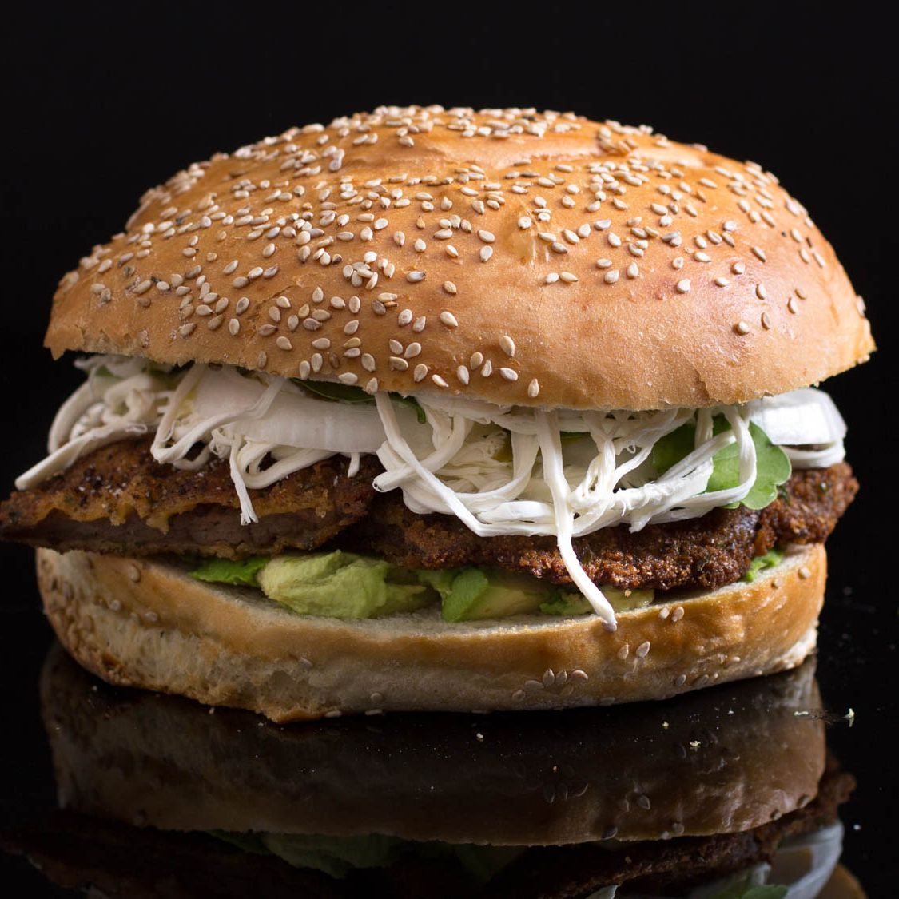

Cemitas

Description
Cemitas are a Mexican sandwich that originally hails from the State of Puebla. This recipe shows you how to make a Pueblan-style cemita with a fried milanesa beef. This recipe is loaded
with Quesillo and a style of different toppings. It can range from lettuce to tomatoes. The one showed above is personally made by my mother. It includes all the regular recipe items but
with a twist to it. Potatoes are added to it to give them a distinct taste. These cemitas are a staple food in her native home state of Puebla.
Ingredients
- Sesame Seed Buns
- Avocados
- Chipotle
- Lettuce
- Breaded milanesa beef
- Tomato
- Quesillo
- Potatoes
Steps
- Set wire rack on a sheet pan. Place milk in a shallow dish. Place flour in another shallow dish. Place bread crumbs in third shallow dish.
Working one at a time, dip cutlets in milk, then dredge in flour, shaking off excess. Return to milk, then dredge in bread crumbs, pressing to adhere.
Place breaded cutlets on a baking sheet.
- Heat about 1/2 inch oil in a cast-iron skillet to 375°F. Working in batches and adding oil as needed to maintain level, fry cutlets, turning once,
until golden brown on both sides, about 3 minutes per side. Transfer to a clean paper-towel-lined baking sheet. Season with salt and pepper when still hot.
- Spread avocado on bottom bun halves. Top with fried cutlets. Mound half of the cheese on the cutlets.
- Top with lettuce and mound the remaining cheese on top. Drizzle with olive oil.
- Scoop some bread from each of the top buns and discard. Close sandwiches and serve right away.